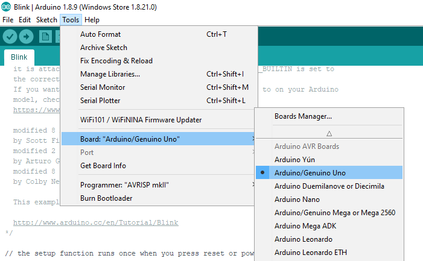
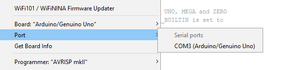

ESP8266 ARDUINO CON WIFI

CARACTERÍSTICAS DEL ESP8266
Arduino IDE Software descargamos la aplicación (lo tenemos en varias plataformas) para realizar nuestros "sketch" que es como arduino llama a los proyectos. Una vez instalado en nuestro sistema lo abrimos y como observamos en la foto vamos a comenzar por seleccionar el sketch de ejemplo de blink (el parpadeo de un led)

Lo primero que tenemos que hacer para comprobar que nuestra computadora reconoce nuestra tarjeta
Arduino UNOq es comprobar en el despegable de


Blink Sketch
/*
Blink (Parpadeo)
Enciende un LED por un segundo, luego lo apaga por otro segundo, repetidamente.
La mayoría de los Arduinos tienen un LED incorporado que puede controlar. En el ARDUINO UNO,
MEGA y CERO está conectado al pin digital 13, en MKR1000 en el pin 6. LED_BUILTIN está
configurado en el pin LED correcto independientemente de qué placa se use.Si desea saber a
qué pin está conectado el LED incorporado en su modelo de Arduino consulte las
especificaciones técnicas de su placa en:
https://www.arduino.cc/en/Main/Products
modified 8 May 2014
by Scott Fitzgerald
modified 2 Sep 2016
by Arturo Guadalupi
modified 8 Sep 2016
by Colby Newman
Este código de ejemplo es de dominio público.
http://www.arduino.cc/en/Tutorial/Blink
*/
// la función setup se ejecuta una vez cunado presionamos reset o cuando se enciende la tarjeta
void setup() {
// inicializamos el pin digital LED_BUILTIN como salida
pinMode(LED_BUILTIN, OUTPUT);
}
// la función loop se ejecuta una y otra vez continuamente
void loop() {
digitalWrite(LED_BUILTIN, HIGH); // enciende el LED (HIGH está recibiendo voltaje)
delay(1000); // espera un segundo
digitalWrite(LED_BUILTIN, LOW); // apaga el LED (LOW no tiene voltaje)
delay(1000); // espera un segundo
}
Este sin duda es el
Descodificando
En un "skech" diferenciamos tres partes:
El
La función
Dentro de esta función a través de la función
La función loop () hace exactamente lo que sugiere su nombre y realiza bucles consecutivos, permitiendo actualizar los cambios (lectura de sensores) y las respuestas (escritura de actuadores).
El
Esto visto así por primera vez es difícil de comprender pero viendo los ejemplos cogerá rápidamente sentido.
Pueba a modificar el tiempo y observa el led
void loop() {
digitalWrite(LED_BUILTIN, HIGH); // enciende el LED (HIGH está recibiendo voltaje)
delay(2000); // espera un segundo
digitalWrite(LED_BUILTIN, LOW); // apaga el LED (LOW no tiene voltaje)
delay(500); // espera un segundo
}
y cárgalo en la tarjeta pulsando la flecha